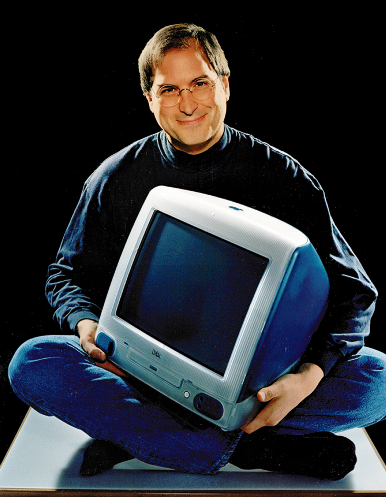
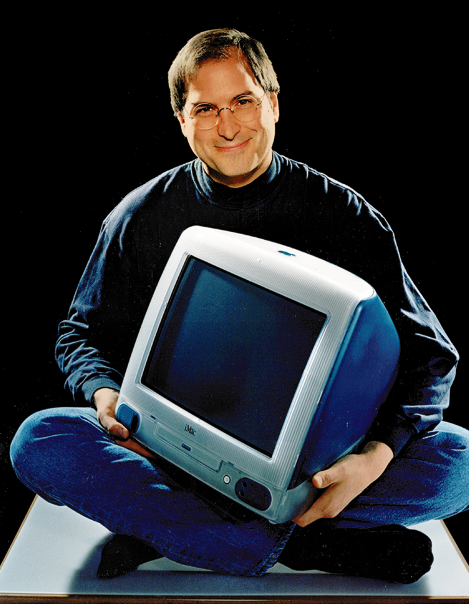

"The Sillicon Valley culture."
Region in San Francisco, California that is considered to be the technology hub of the United States. The region is made up a number of computer companies and computer chip manufactures. The region gets its nickname from the silicon that is used in computer chips. Due to the demand for space in Silicon Valley, real estate and other property is very expensive and hard to find.
Silicon Valley is a nickname for the southern portion of the San Francisco Bay Area, which is located in part of the U.S. state of California known as Northern California. It is home to many of the world's largest high-tech corporations, as well as thousands of startup companies. Several companies which have enormous presence around the world have their headquarters in Silicon Valley. Silicon Valley is a term applied as a whole for different regions present in Northern California.
Shrine for every software developer
The main reason for Silicon Valley's success is its spirit of cooperation. For example, many
founders of local companies went to school together. That makes them more likely to promote each
other regardless of company affiliation. Personal loyalties override corporate ones. Professional networks led
to easy information exchange. Companies found that collaboration between them made them all more successful.
The
State of California prohibited non-compete clauses. As a result, star performers could leave a company to start
their own to test out new ideas. As a result, employees focus on helping each other solve problems. An
often-overlooked reason is Silicon Valley's cultural diversity. Between 1995-2005, more than half of its
start-ups were founded by immigrants. Why? The Valley attracts top engineers from around the world, especially
India and China. Diversity leads to innovation as long as everyone focuses on their shared goals.
The most well-known Silicon Valley companies are Apple, Facebook, Google, and Netflix. The area also launched Tesla, Twitter, Yahoo!, and eBay. There are many business support companies such as Cisco, Oracle, Salesforce.com, Hewlett-Packard, and Intel. Other companies include Adobe, Intuit, and Zynga.
Click the button below to see how the Silicon valley was transformed and who did it


 
